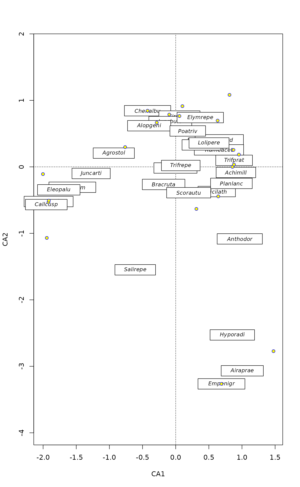
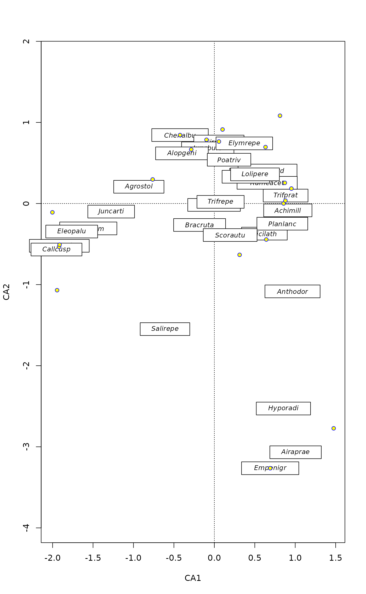

Add Text on Non-transparent Label to an Ordination Plot.
ordilabel.RdFunction ordilabel is similar to
text, but the text is on an opaque label. This can help
in crowded ordination plots: you still cannot see all text labels, but
at least the uppermost ones are readable. Argument priority helps to
make the most important labels visible. Function can be used in pipe
after ordination plot or ordiplot command.
Usage
ordilabel(x, display, labels, choices = c(1, 2), priority, select,
cex = 0.8, fill = "white", border = NULL, col = NULL, xpd = TRUE, ...)Arguments
- x
An ordination object an any object known to
scores.- display
Kind of scores displayed (passed to
scores).- labels
Optional text used in plots. If this is not given, the text is found from the ordination object.
- choices
Axes shown (passed to
scores).- priority
Vector of the same length as the number of labels. The items with high priority will be plotted uppermost.
- select
Items to be displayed. This can either be a logical vector which is
TRUEfor displayed items or a vector of indices of displayed items.- cex
Character expansion for the text (passed to
text).- fill
Background colour of the labels (the
colargument ofpolygon).- border
The colour and visibility of the border of the label as defined in
polygon. The default is to use text colourcol.- col
Text colour.
- xpd
Draw labels also outside the plot region.
- ...
Other arguments (passed to
text).
Details
The function may be useful with crowded ordination plots, in
particular together with argument priority. You will not see
all text labels, but at least some are readable. Function can be used
as a part of a pipe (|>) in place of text after an
ordination plot command (see Examples).
Other alternatives for cluttered plots are
identify.ordiplot, orditorp,
ordipointlabel and orditkplot
(in vegan3d package).
See also
plot.cca and text.ordiplot that
can use the function with argument bg.
Examples
data(dune)
ord <- cca(dune)
plot(ord, type = "n")
## add text
ordilabel(ord, dis="sites", cex=1.2, font=3, fill="hotpink", col="blue")
## You may prefer separate plots, but here species as well
ordilabel(ord, dis="sp", font=2, priority=colSums(dune))
 ## use in a pipe
plot(ord, type = "n") |>
ordilabel("spec", font = 3, priority = colSums(dune)) |>
points("sites", pch=21, bg = "yellow", col = "blue")

## use in a pipe
plot(ord, type = "n") |>
ordilabel("spec", font = 3, priority = colSums(dune)) |>
points("sites", pch=21, bg = "yellow", col = "blue")
